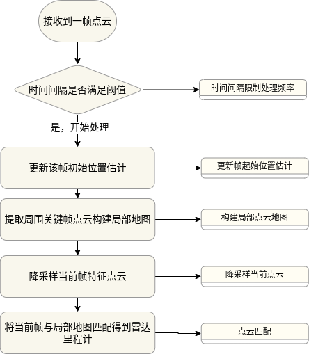
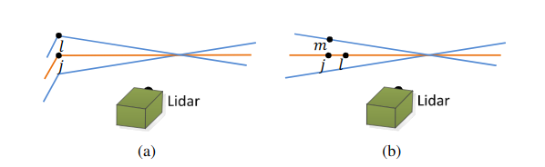

Simple-LIO-SAM——（九）点云匹配算法详解
- ⭐ Zeal's Blog
- 🛠 知乎专栏
- 🌀 项目仓库
前言
LIOSAM中激光历程计的点云匹配方法沿用自LOAM，这个基于点到线和点到面距离求解最小二乘问题的方法起始被用到很多框架，包括LOAM,LOAM,Lego-LOAM,各种LOAM的变种，LIOSAM及其变种。这段点云匹配代码可以说被重用了很多次，但是各个论文对这部分的描述实际上很少或者基本省略，LOAM原始论文对这部分的描述与实际的代码实现差别比较大，导致如果想真正看懂这段代码还是挺难的。这篇文章详细地剖析这部分的原理、实现、以及与论文中不同之处。这里面唯一有一点还没有搞清楚的是对于 高斯矩阵退化部分的实现。
由于本文主要是想讲明白在上述这些SLAM框架中点云匹配的实现，因此对于最小二乘问题的求解不会详细展开，需要这部分知识可以参考最小二乘问题求解的四种解法或者《视觉SLAM十四讲》中关于最小二乘问题求解的章节。
点云-局部地图匹配流程Scan-2-Map
在LIOSAM中，对于每一帧点云\(\mathbb{F}_i\)会先进行特征点提取。特征点包括线特征点和平面特征点（具体方法参考本博客文章：Simple-LIO-SAM——（六）特征提取模块)。我们记提取后的线特征点云为\(F^e_i\)，平面特征点云为\(F^p_i\)。
经过一段时间后\(1,2,3,...,i-1\)后，我们拥有一系列关键帧的线特征点云\(F^e_1,F^e_2,F^e_3,...,F^e_{i-1}\)和平面特征点云\(F^p_1,F^p_2,F^p_3,...,F^p_{i-1}\)，以及这些关键帧对应的位姿\(T_1,T_2,T_3,...,T_{i-1}\). 同时对于点云\(\mathbb{F}_i\)，我们通过IMU里程计还可以获得该帧点云的初始位姿估计\(\hat{T}_i\)，这个位姿估计\(\hat{T}_i\)其实就是我们要优化的量。
在LIOSAM中，激光里程计匹配的是当前帧点云和局部地图。局部地图是通过当前帧空间以及时间近邻的其他关键帧构建的。 
对于任何一帧点云以及对应的位姿，我们可以将点云转换到地图坐标系： \[\mathbb{F}^m_i = R_i\mathbb{F}_i+t_i\] 其中\(m\)上标指的是地图坐标系，\(R_i\)和\(t_i\)是位姿\(T_i\)中的旋转矩阵和平移向量。
对选择为构建局部地图的关键帧分别应用上式并累加起来（实际累加后会进行体素降采样）后就构成局部地图\(M^e_i\)和\(M^p_i\)，\(e\)和\(p\)下标表示edge和planner。
同时，我们对当前帧的特征点云\(F^e_i\)和\(F^p_i\)应用位姿的初始估计\(\hat{T}_i\)可以得到在近似地图坐标系下的点云。为了方便后面叙述，这里省略坐标系和关键帧索引的上下标。重申一下我们的输入：
- 地图坐标系下的局部点云地图\(M^e\)和\(M^p\)
- 雷达坐标系下的当前帧特征点云\(F^e\)和\(F^p\)
- 当前帧的初始位姿估计\(\hat{T}_i=[\hat{R}_i,\hat{t}_i]\)
我们的目标就是优化位姿\(T_i\)使得用这个位姿将\(F^e\)和\(F^p\)转换到地图坐标系后与地图点云的匹配程度最好。
几何相关知识
点到线距离
论文中计算方法
上图的子图（a）展示如何对当前帧边缘点点集\(F^e\)中的每一个点从局部地图\(M^e\)中找到对应的直线。对于每一个边缘点\(P^{F^e}_i \in F^e\)，从局部地图的边缘点集合\(M^e\)中找到最近点\(P^{M^e}_j\)，橘色线是点\(j\)所在的激光线束，蓝色线是前后相近的另外两条激光线束。从前后两条激光线束（蓝色线）找出与\(e_i\)距离最近的点，并选择两者中距离更小的点作为点\(P^{M^e}_l\)，则经过点\(P^{M^e}_j\)、\(P^{M^e}_l\)组成的线为点\(P^{F^e}_i\)对应的直线。那么问题就转化为点\(P^{F^e}_i\)到经过点\(P^{M^e}_j\)、\(P^{M^e}_l\)的直线的距离。
该距离计算公式如下：
\[ d_{e}=\frac{|(P^{F^e}_i - P^{M^e}_j)\times (P^{F^e}_i - P^{M^e}_l)|}{|(P^{M^e}_j - P^{M^e}_l)|}\tag{1} \]
公式（1）中分子部分计算的是向量\((P^{F^e}_i - P^{M^e}_j)\)和\((P^{F^e}_i - P^{M^e}_l)\)的叉积的模长。两个向量的叉积是一个向量，方向于两个向量构成的平面垂直，模长等于两个向量组成的平行四边形面积。公式（1）的分母代表的是该平行四边形对角线的长度。因此分子除以分母就等于直线外一点到直线的距离。
代码中计算方法
在论文中对\(F^e\)的点找到\(M^e\)对应的直线是通过找到两个距离最近的点，但是在代码中是找到距离最近的5个点，然后计算这5个点的协方差，对协方差做特征值分解，最大的特征值对应的特征向量为主方向，并判断这5个点的分布是否接近直线的要求。 代码中寻找点到局部地图的对应直线，然后计算距离和法向量主要是在mapOptimization中的函数cornerOptimization中完成。
对点集\(F^e\)中的点从局部地图\(M^e\)中找到最近5个点
1
2
3
4
5// 从局部地图（已经提前设置好kdtree）中找到最近的5个点
// pointSel为检索点
// pointSearchInd存储检索结果的5个点在原始点云中的索引
// pointSearchSqDis存储检索出的5个点与检索点的距离的平方
kdtreeCornerFromMap->nearestKSearch(pointSel, 5, pointSearchInd, pointSearchSqDis);计算这5个点的协方差矩阵
1
2
3
4
5
6
7
8
9
10
11
12
13
14
15
16
17
18
19
20
21
22
23
24
25
26// cx,cy,cz是检索出的5个点的中心坐标
float cx = 0, cy = 0, cz = 0;
for (int j = 0; j < 5; j++) {
cx += laserCloudCornerFromMapDS->points[pointSearchInd[j]].x;
cy += laserCloudCornerFromMapDS->points[pointSearchInd[j]].y;
cz += laserCloudCornerFromMapDS->points[pointSearchInd[j]].z;
}
cx /= 5; cy /= 5; cz /= 5;
// 协方差矩阵是对称矩阵
float a11 = 0, a12 = 0, a13 = 0, a22 = 0, a23 = 0, a33 = 0;
for (int j = 0; j < 5; j++) {
float ax = laserCloudCornerFromMapDS->points[pointSearchInd[j]].x - cx;
float ay = laserCloudCornerFromMapDS->points[pointSearchInd[j]].y - cy;
float az = laserCloudCornerFromMapDS->points[pointSearchInd[j]].z - cz;
a11 += ax * ax; a12 += ax * ay; a13 += ax * az;
a22 += ay * ay; a23 += ay * az;
a33 += az * az;
}
a11 /= 5; a12 /= 5; a13 /= 5; a22 /= 5; a23 /= 5; a33 /= 5;
// 存储协方差的值到matA1
matA1.at<float>(0, 0) = a11; matA1.at<float>(0, 1) = a12; matA1.at<float>(0, 2) = a13;
matA1.at<float>(1, 0) = a12; matA1.at<float>(1, 1) = a22; matA1.at<float>(1, 2) = a23;
matA1.at<float>(2, 0) = a13; matA1.at<float>(2, 1) = a23; matA1.at<float>(2, 2) = a33;计算直线方向，也就是特征值分解，最大特征值对应的特征向量为数据主方向
1
2// 对协方差矩阵做特征值分解，最大特征值对应的特征向量是这5个点的主方向
cv::eigen(matA1, matD1, matV1);计算点到直线距离
1
2
3
4
5
6
7
8
9
10
11
12
13
14
15
16
17
18
19
20
21
22
23
24
25
26
27
28
29
30
31
32
33
34
35
36
37
38
39// 以下部分是在计算当前点pointSel到检索出的直线的距离和方向，如果距离够近，则认为匹配成功，否则认为匹配失败
// x0,y0,z0是直线外一点
float x0 = pointSel.x;
float y0 = pointSel.y;
float z0 = pointSel.z;
// matV1的第一行就是5个点形成的直线的方向，cx,cy,cz是5个点的中心点
// 因此，x1,y1,z1和x2,y2,z2是经过中心点的直线上的另外两个点，两点之间的距离是0.2米
float x1 = cx + 0.1 * matV1.at<float>(0, 0);
float y1 = cy + 0.1 * matV1.at<float>(0, 1);
float z1 = cz + 0.1 * matV1.at<float>(0, 2);
float x2 = cx - 0.1 * matV1.at<float>(0, 0);
float y2 = cy - 0.1 * matV1.at<float>(0, 1);
float z2 = cz - 0.1 * matV1.at<float>(0, 2);
// 这边是在求[(x0-x1),(y0-y1),(z0-z1)]与[(x0-x2),(y0-y2),(z0-z2)]叉乘得到的向量的模长
// 这个模长是由0.2*V1[0]和点[x0,y0,z0]构成的平行四边形的面积
// 垂直于0,1,2三点构成的平面的向量[XXX,YYY,ZZZ] = [(y0-y1)(z0-z2)-(y0-y2)(z0-z1),-(x0-x1)(z0-z2)+(x0-x2)(z0-z1),(x0-x1)(y0-y2)-(x0-x2)(y0-y1)]
float a012 = sqrt(((x0 - x1)*(y0 - y2) - (x0 - x2)*(y0 - y1)) * ((x0 - x1)*(y0 - y2) - (x0 - x2)*(y0 - y1))
+ ((x0 - x1)*(z0 - z2) - (x0 - x2)*(z0 - z1)) * ((x0 - x1)*(z0 - z2) - (x0 - x2)*(z0 - z1))
+ ((y0 - y1)*(z0 - z2) - (y0 - y2)*(z0 - z1)) * ((y0 - y1)*(z0 - z2) - (y0 - y2)*(z0 - z1)));
// l12表示的是0.2*(||V1[0]||)
// 点x1,y1,z1到点x2,y2,z2的距离
float l12 = sqrt((x1 - x2)*(x1 - x2) + (y1 - y2)*(y1 - y2) + (z1 - z2)*(z1 - z2));
// 求叉乘结果[la',lb',lc']=[(x1-x2),(y1-y2),(z1-z2)]x[XXX,YYY,ZZZ]
// [la,lb,lc]=[la',lb',lc']/a012/l12
// LLL=[la,lb,lc]是0.2*V1[0]这条高上的单位法向量。||LLL||=1；
float la = ((y1 - y2)*((x0 - x1)*(y0 - y2) - (x0 - x2)*(y0 - y1))
+ (z1 - z2)*((x0 - x1)*(z0 - z2) - (x0 - x2)*(z0 - z1))) / a012 / l12;
float lb = -((x1 - x2)*((x0 - x1)*(y0 - y2) - (x0 - x2)*(y0 - y1))
- (z1 - z2)*((y0 - y1)*(z0 - z2) - (y0 - y2)*(z0 - z1))) / a012 / l12;
float lc = -((x1 - x2)*((x0 - x1)*(z0 - z2) - (x0 - x2)*(z0 - z1))
+ (y1 - y2)*((y0 - y1)*(z0 - z2) - (y0 - y2)*(z0 - z1))) / a012 / l12;
// ld2就是点pointSel(x0,y0,z0)到直线的距离
float ld2 = a012 / l12;
点到面距离
论文中计算方法
再次贴出论文中的图与计算点到直线的距离类似，对于一个平面点\(P^{F^p}_i \in F^p\)，从局部地图平面点集\(M^p\)中找到最近点\(P^{M^p}_j\)，再从该点所在的激光线束找到另一个点\(P^{M^p}_l\)以及前后两条激光线束中找到另外一个最近点\(P^{M^p}_m\)，这样就确保了三个点不会共线。 那么问题就转化为已知经过三个点\(P^{M^p}_{jlm}\)的平面，求平面外一点\(P^{F^p}_i\)到该平面的距离 首先，根据三个点，我们可以计算该平面的法向量，并归一化为单位法向量
\[ n_{jlm}=(P^{M^p}_j - P^{M^p}_l)\times (P^{M^p}_j - P^{M^p}_m) \]
\[ n_{jlm} = \frac{n_{jlm}}{|n_{jlm}|} \]
于是，点到平面的距离为 \[ d_p = |(P^{F^p}_i - P^{M^p}_j)n_{jlm}|\tag{2} \]
代码中计算方法
在代码中，也是先根据点\(P^{F^p}_i\)从局部地图平面点集中找到最近的5个点，然后对这5个点用最小二乘法（求解超定方程）得到拟合平面的法向量。得到平面方程后就可以直接计算点到平面的距离了。这部分代码在mapOptimization.cpp中surfOptimization函数
从局部地图找到距离最近的5个点
1
2// 与边缘点找直线一样，从局部地图的平面点集中找到与pointSel距离最近的5个点
kdtreeSurfFromMap->nearestKSearch(pointSel, 5, pointSearchInd, pointSearchSqDis);求解方程Ax+By+Cz+1=0方程
1
2
3
4
5
6
7
8
9
10
11
12
13
14
15
16
17
18
19
20// 下面的过程要求解Ax+By+Cz+1=0的平面方程
// 由于有5个点，因此是求解超定方程
// 假设5个点都在平面上，则matA0是系数矩阵，matB0是等号右边的值（都是-1）；matX0是求出来的A，B，C
Eigen::Matrix<float, 5, 3> matA0;
Eigen::Matrix<float, 5, 1> matB0;
Eigen::Vector3f matX0;
matA0.setZero();
matB0.fill(-1);
matX0.setZero();
for (int j = 0; j < 5; j++) {
matA0(j, 0) = laserCloudSurfFromMapDS->points[pointSearchInd[j]].x;
matA0(j, 1) = laserCloudSurfFromMapDS->points[pointSearchInd[j]].y;
matA0(j, 2) = laserCloudSurfFromMapDS->points[pointSearchInd[j]].z;
}
// 这里是求解matA0XmatX0 = matB0方程
matX0 = matA0.colPivHouseholderQr().solve(matB0);求点到平面距离
1
2
3
4
5
6
7
8float pa = matX0(0, 0);
float pb = matX0(1, 0);
float pc = matX0(2, 0);
float pd = 1;
// （pa,pb,pc)是平面的法向量，这里是对法向量规一化，变成单位法向量
float ps = sqrt(pa * pa + pb * pb + pc * pc);
pa /= ps; pb /= ps; pc /= ps; pd /= ps;
最小二乘问题求解
从前面两步，我们得到了一些边缘点和平面点到局部地图的距离和距离向量，我们的目标就是优化这些距离。由于我们现在有6个未知数，也就是位姿的6个自由度\(T_i=[t_x,t_y,t_z,roll,pitch,yaw]\)，但是我们的点超过6个，因此是求解最小二乘问题。
最小二乘问题是最优化里的基础问题，这里就不展开公式推导了，具体可以参考这篇文章最小二乘问题求解的四种解法。
常见的求解最小二乘问题有高斯牛顿法（Gauss-Newton Method）和列温伯格马夸克法（Levernberg-Marquate），后者是前者的改进。LOAM论文里面虽然用的是LM算法，但是在代码中实际用的是GN算法。这里只强调GN算法的核心思路。
GN算法也是迭代更新的算法，每一步重点在与求出未知量的更新方向和步长，每一步将更行向量叠加到未知量上，让目标函数逐渐收敛。 在这里，未知量是位姿\(T_i\)，目标函数是点到直线点到平面距离\(\mathbb{d}\)，因此，我们在每一步迭代中要找到一个\(\Delta{T}_i\)，更新未知量\(T_i \larr T_i + \Delta{T}_i\)，并使得距离\(\mathbb{b}\)逐渐下降。
在高斯牛顿法中，更新向量的是通过求解增量方程得到 \[ J(x)J(x)^T\Delta{x}=-J(x)f(x)\tag{3} \]
公式（3）就是高斯牛顿法的增量方程，\(J(x)\)是雅克比矩阵，也就是目标函数相对于未知量的偏导；\(f(x)\)是目标函数；\(\Delta{x}\)就是我们要求的增量。
代码中点云匹配算法（基于GN算法）
这部分内容对于数学公式推导部分主要参考wykxwyc.github.io，但是原文中对于旋转矩阵对欧拉角的求导似乎有点问题，与代码对不上。
欧拉角转旋转矩阵
代码中对角度的表达使用欧拉角表达，因此我们需要先将欧拉角转换为旋转矩阵形式。记\(x,y,z\)轴的角度为\(\alpha,\beta,\gamma\) \[ \begin{split} R_{\alpha}= \begin{bmatrix} 1&0&0\\ 0&\cos\alpha&-\sin\alpha\\ 0&\sin\alpha&\cos\alpha \end{bmatrix} \end{split} \]
\[ \begin{split} R_{\beta}= \begin{bmatrix} \cos\beta&0&\sin\beta\\ 0&1&0\\ -\sin\beta&0&\cos\beta \end{bmatrix} \end{split} \]
\[ \begin{split} R_{\gamma}= \begin{bmatrix} \cos\gamma&-\sin\gamma&0\\ \sin\gamma&\cos\gamma&0\\ 0&0&1\\ \end{bmatrix} \end{split} \]
PS: 为了简便起见，我们在后面的推导中使用\(c_1,c_2,c_3\)表示\(\cos\alpha,\cos\beta,\cos\gamma\)，用\(s_1,s_2,s_3\)表示\(\sin\alpha,\sin\beta,\sin\gamma\)
根据上面转换关系，使用\(Z-X-Y\)顺序，将欧拉角转换为旋转矩阵如下
\[ \begin{split} \begin{array}{rcl} R &=&R_yR_xR_z\\ &=& \begin{bmatrix} c_2&0&s_2\\ 0&1&0\\ -s_2&0&c_2 \end{bmatrix} \begin{bmatrix} 1&0&0\\ 0&c_1&-s_1\\ 0&s_1&c_1 \end{bmatrix} \begin{bmatrix} c_3&-s_3&0\\ s_3&c_3&0\\ 0&0&1 \end{bmatrix}\\ &=& \begin{bmatrix} c_2c_3+s_1s_2s_3&-c_2s_3+s_1s_2c_3&c_1s_2\\ c_1s_3&c_1c_3&-s_1\\ -s_2c_3+s_1c_2s_3&s_2s_3+s_1c_2c_3&c_1c_2 \end{bmatrix} \end{array} \end{split} \]
目标函数对位姿求雅克比矩阵
Keep In Mind：位姿\(T_i=[t_x,t_y,t_z,\alpha,\beta,\gamma]=[R,t]\)是我们要求的量
对于当前帧特征点\(F^e,F^p\)中的一个点\(P_i=[p_x,p_y,p_z]\)（这里没有区分边缘点和平面点，因为两者的偏导公式一样），我们使用函数\(G(\cdot)\)将其从雷达坐标系转换到局部坐标系(m上标表示地图坐标系) \[ P^m_i=G(P_i,T_i)=R\cdot P_i+t \] 我们使用函数\(D(\cdot)\)表示该点到局部地图的距离，也就是目标函数 \[ loss=D(G(P_i,T_i),Map) = d \] 上式中\(d\)对于边缘点代表点到直线距离，对于平面点表示点到平面距离
误差对旋转求偏导 这里以\(x\)轴的旋转\(\alpha\)为例
\[ \begin{split} \begin{array}{rcl} \frac{\partial loss}{\partial \alpha} &=& \frac{\partial D\left(G(P_i,T_i),Map\right)}{\partial \alpha}\\ &=& \frac{\partial D}{\partial G}\cdot \frac{\partial G}{\partial \alpha}\\ &=& \frac{\partial D}{\partial G}\cdot \frac{\partial R\cdot P_i+t}{\partial \alpha}\\ &=& \frac{\partial D}{\partial G}\cdot \frac{\partial R\cdot P_i}{\partial \alpha}\\ &=& \frac{\partial D}{\partial G}\cdot \frac{\partial R}{\partial \alpha}\cdot P_i \end{array} \end{split}\tag{4} \]
误差对平移求偏导 这里以\(x\)轴的平移\(t_x\)为例
\[ \begin{split} \begin{array}{rcl} \frac{\partial loss}{\partial t_x} &=& \frac{\partial D\left(G(P_i,T_i),Map\right)}{\partial t_x}\\ &=& \frac{\partial D}{\partial G}\cdot \frac{\partial G}{\partial t_x}\\ &=& \frac{\partial D}{\partial G}\cdot \frac{\partial R\cdot P_i+t}{\partial t_x}\\ &=& \frac{\partial D}{\partial G}\cdot \frac{\partial R\cdot P_i}{\partial \alpha} + \frac{\partial D}{\partial G}\cdot\frac{\partial t}{\partial t_x}\\ &=& 0+\frac{\partial D}{\partial G}\cdot\frac{\partial t}{\partial t_x}\\ &=& \frac{\partial D}{\partial G} \end{array} \end{split}\tag{5} \]
求解\(\frac{\partial D}{\partial G}\) 在上面误差对旋转求偏导中旋转矩阵对欧拉角求偏导\(\frac{\partial R}{\partial \alpha}\)已经在前面的章节推导过了。公式(4)(5)还有一个未知量就是\(\frac{\partial D}{\partial G}\)
\[ \frac{\partial D}{\partial G} = \frac{\partial d}{\partial P^m_i} \] 也就是说\(\frac{\partial D}{\partial G}\)求的是损失函数也就是点到线和点到面的距离相对于点（地图坐标系下）的偏导数。这点可以理解成求一个移动方向，使得让点\(P^m_i\)沿着这个方向移动，损失函数上升得最快。很容易想到这个方向就是法线方向（对于点到直线的情况则是直线的垂线方向） 因此
\[ \frac{\partial D}{\partial G} = \frac{\partial d}{\partial P^m_i}=\big(\frac{\partial d}{\partial x}, \frac{\partial d}{\partial y}, \frac{\partial d}{\partial z}\big)=(n_x,n_y,n_z) \]
代码中雅克比矩阵的计算
这部分计算主要在mapOptimization.cpp中的LMOptimization函数。这里要注意的是，LIOSAM这部分代码计算中还加了坐标系的转换，实际上是没有必要的，这部分代码可以看LeGO-LOAM的代码，是完全一样的 1
2
3
4
5
6
7
8
9
10
11
12
13
14
15
16
17
18
19
20
21
22
23
24
25
26
27
28
29
30
31
32
33
34
35
36
37
38
39
40
41
42
43
44
45
46
47
48
49
50
51
52
53
54
55
56
57
58
59
60
61
62
63
64
65
66
67
68
69
70
71
72
73
74
75
76
77
78
79
80
81
82
83
84
85
86
87// 计算三轴欧拉角的sin、cos，后面使用旋转矩阵对欧拉角求导中会使用到
// lidar -> camera
float srx = sin(transformTobeMapped[1]);
float crx = cos(transformTobeMapped[1]);
float sry = sin(transformTobeMapped[2]);
float cry = cos(transformTobeMapped[2]);
float srz = sin(transformTobeMapped[0]);
float crz = cos(transformTobeMapped[0]);
// laserCloudOri是在cornerOptimization、surfOptimization两个函数中找到的有匹配关系的
// 角点和平面点，如果找到的可供优化的点数太少，则跳过此次优化
int laserCloudSelNum = laserCloudOri->size();
if (laserCloudSelNum < 50) {
return false;
}
// matA是Jacobians矩阵J
cv::Mat matA(laserCloudSelNum, 6, CV_32F, cv::Scalar::all(0));
cv::Mat matAt(6, laserCloudSelNum, CV_32F, cv::Scalar::all(0));
cv::Mat matAtA(6, 6, CV_32F, cv::Scalar::all(0));
// matB是目标函数，也就是距离
cv::Mat matB(laserCloudSelNum, 1, CV_32F, cv::Scalar::all(0));
cv::Mat matAtB(6, 1, CV_32F, cv::Scalar::all(0));
// matX是高斯-牛顿法计算出的更新向量
cv::Mat matX(6, 1, CV_32F, cv::Scalar::all(0));
cv::Mat matP(6, 6, CV_32F, cv::Scalar::all(0));
PointType pointOri, coeff;
for (int i = 0; i < laserCloudSelNum; i++) {
// 坐标系转换这部分可以不用看，没有什么作用
// lidar -> camera
pointOri.x = laserCloudOri->points[i].y;
pointOri.y = laserCloudOri->points[i].z;
pointOri.z = laserCloudOri->points[i].x;
// lidar -> camera
coeff.x = coeffSel->points[i].y;
coeff.y = coeffSel->points[i].z;
coeff.z = coeffSel->points[i].x;
coeff.intensity = coeffSel->points[i].intensity;
// in camera
// 求雅克比矩阵的值，也就是求目标函数（点到线、平面的距离）相对于tx,ty,tz,rx,ry,rz的导数
// 具体的公式推导看仓库README中本项目博客，高斯牛顿法方程：J^{T}J\Delta{x} = -Jf(x)，\Delta{x}就是要求解的更新向量matX
// arx是目标函数相对于roll的导数
float arx = (crx*sry*srz*pointOri.x + crx*crz*sry*pointOri.y - srx*sry*pointOri.z) * coeff.x
+ (-srx*srz*pointOri.x - crz*srx*pointOri.y - crx*pointOri.z) * coeff.y
+ (crx*cry*srz*pointOri.x + crx*cry*crz*pointOri.y - cry*srx*pointOri.z) * coeff.z;
// ary是目标函数相对于pitch的导数
float ary = ((cry*srx*srz - crz*sry)*pointOri.x
+ (sry*srz + cry*crz*srx)*pointOri.y + crx*cry*pointOri.z) * coeff.x
+ ((-cry*crz - srx*sry*srz)*pointOri.x
+ (cry*srz - crz*srx*sry)*pointOri.y - crx*sry*pointOri.z) * coeff.z;
// arz是目标函数相对于yaw的导数
float arz = ((crz*srx*sry - cry*srz)*pointOri.x + (-cry*crz-srx*sry*srz)*pointOri.y)*coeff.x
+ (crx*crz*pointOri.x - crx*srz*pointOri.y) * coeff.y
+ ((sry*srz + cry*crz*srx)*pointOri.x + (crz*sry-cry*srx*srz)*pointOri.y)*coeff.z;
/*
在求点到直线的距离时，coeff表示的是如下内容
[la,lb,lc]表示的是点到直线的垂直连线方向，s是长度
coeff.x = s * la;
coeff.y = s * lb;
coeff.z = s * lc;
coeff.intensity = s * ld2;
在求点到平面的距离时，coeff表示的是
[pa,pb,pc]表示过外点的平面的法向量，s是线的长度
coeff.x = s * pa;
coeff.y = s * pb;
coeff.z = s * pc;
coeff.intensity = s * pd2;
*/
// lidar -> camera
matA.at<float>(i, 0) = arz;
matA.at<float>(i, 1) = arx;
matA.at<float>(i, 2) = ary;
// 目标函数相对于tx的导数等于法向量的x
matA.at<float>(i, 3) = coeff.z;
// 目标函数相对于ty的导数等于法向量的y
matA.at<float>(i, 4) = coeff.x;
// 目标函数相对于tz的导数等于法向量的z
matA.at<float>(i, 5) = coeff.y;
// matB存储的是目标函数（距离）的负值，因为：J^{T}J\Delta{x} = -Jf(x)
matB.at<float>(i, 0) = -coeff.intensity;
}
更新
得到雅克比矩阵后就可以直接求解高斯-牛顿法里的增量方程 \[ J(x)J(x)^T\Delta{x}=-J(x)f(x)\tag{3} \]
1 | cv::transpose(matA, matAt); |
高斯矩阵退化
这部分代码其实有一小段没办法完全理解，就是在进行第一次迭代时会对近似Hessian矩阵做是否退化的的判断，然后对退化的方向进行处理，最后对增量进行重新加权。但是实在没有找到这种用法的出处。
1 | // 如果是第一次迭代，判断求解出来的近似Hessian矩阵，也就是J^{T}J:=matAtA是否退化 |
收敛条件判断
当增量步长达到一定阈值后，认为优化已经收敛，因此可以跳出后续迭代。这里用增量中的角度增量和平移增量的幅度做判断。 1
2
3
4
5
6
7
8
9
10
11
12
13
14
15// 计算roll、pitch、yaw的迭代步长
float deltaR = sqrt(
pow(pcl::rad2deg(matX.at<float>(0, 0)), 2) +
pow(pcl::rad2deg(matX.at<float>(1, 0)), 2) +
pow(pcl::rad2deg(matX.at<float>(2, 0)), 2));
// 计算tx，ty，tz的迭代步长
float deltaT = sqrt(
pow(matX.at<float>(3, 0) * 100, 2) +
pow(matX.at<float>(4, 0) * 100, 2) +
pow(matX.at<float>(5, 0) * 100, 2));
// 如果迭代的步长达到设定阈值，则认为已经收敛
if (deltaR < 0.05 && deltaT < 0.05) {
return true; // converged
}